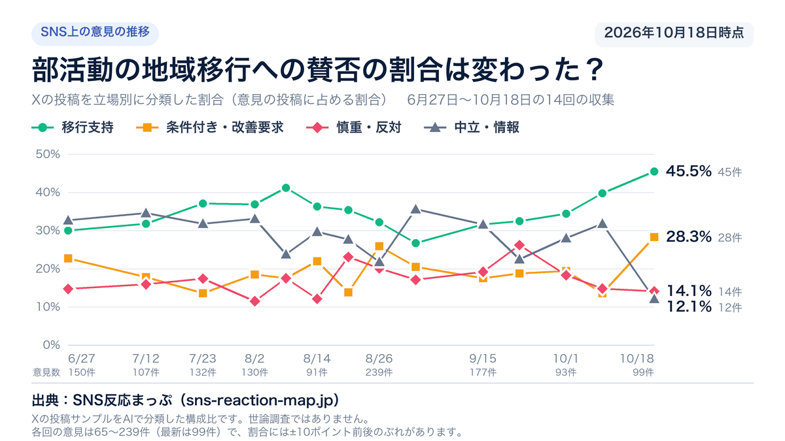
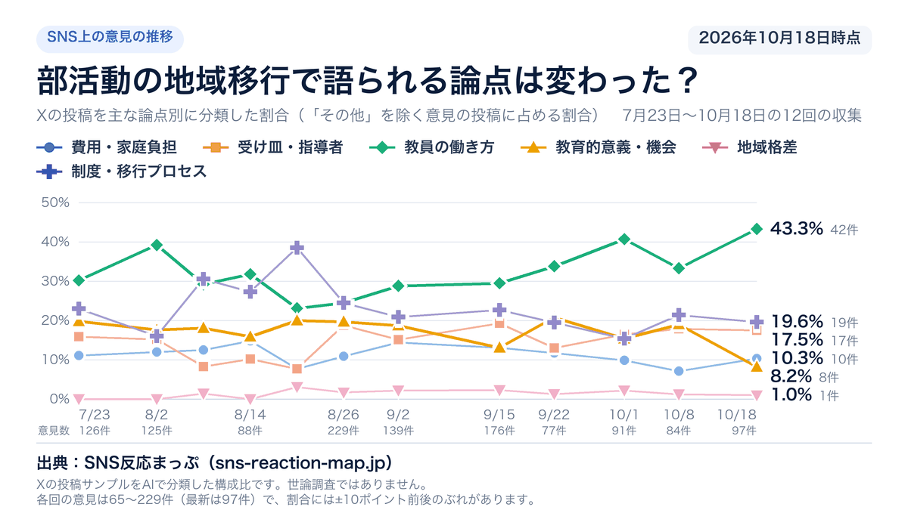

制度の情報
いつから？
国の改革実行期間は2026〜2031年度です。
いまは前期の1年目にあたります。休日は、期間内に原則すべての学校部活動で地域展開することが国の目標です。実施時期は地域ごとに異なります。
休日・平日の違いと、次の節目を見る →教育・子ども ／ 部活動の地域展開制度の確認 2026.10.14
国の方針と費用の目安を確かめ、部活動をめぐるSNSの声を論点ごとに読み解きます。
国は2025年12月のガイドラインで、呼び方を「地域移行」から「地域展開」に変えました。このページでは、検索で多く使われる「地域移行」も使います。
改革実行期間・前期2026年10月18日の時点は、改革実行期間の前期（2026〜2028年度）の1年目です。前期の終わりに、国が中間評価をします。
制度の情報
国の改革実行期間は2026〜2031年度です。
いまは前期の1年目にあたります。休日は、期間内に原則すべての学校部活動で地域展開することが国の目標です。実施時期は地域ごとに異なります。
休日・平日の違いと、次の節目を見る →制度の情報
会費は地域や活動によって異なります。
国は、休日に月4日ほど活動する場合の参加費のイメージを、月額1,000〜3,000円程度と示しています。保険・用具・送迎の負担も、あわせて確かめておきたい点です。
費用の資料と意見を読む →SNSの意見
費用・指導者・教員の負担など。
SNSの意見で最も多い論点は「教員の働き方」の508件でした。何を期待し、何を心配するかで見方が分かれます。
論点ごとの理由を読む →主な対象は公立中学校等です。全国の学校が同じ日に切り替わる制度ではないので、開始時期は学校や自治体の案内で確かめてください。
2023〜2025年度。国が重点的に支援する期間で、全国の移行を終える期限ではない
改革実行期間の進め方と、地域クラブ活動の認定制度を示した
2026〜2028年度。休日の地域展開に、まだの自治体も着手する
地域クラブ活動の認定要件を満たす準備の期間。特別な事情があれば前期の終わりまで
平日の取組方針を改めて決める。具体的な日付は示されていない
2029〜2031年度。中間評価を踏まえて改革を進める
休日は、この時までに原則すべての学校部活動で地域展開を目指す
国の資料を開き直して確かめた日は2026年10月14日です。前期・後期のどこにいるかは、集計の更新日（2026年10月18日）を基準にしました。
1,677件
部活動の地域移行に触れた公開投稿を数えたもので、世論調査で聞いた賛否の割合とは性質が違います。
Yahooリアルタイム検索で集めた2026年6月27日〜10月18日の公開投稿は2,129件で、上の数はそのうち意見を含むと判定した投稿です。
「地域格差」「その他」の欄は、投稿を一件ずつ読んで理由に分ける作業が済んでいないため、理由の内訳を載せていません。
集計の更新は2026年10月18日。次の更新予定は10月27日です。
論点ごとに読む
論点ごとに、投稿が挙げた理由と国の資料を並べました。タブで論点を替えても、読んでいる位置はそのままです。
Yahoo!リアルタイム検索で集めた公開投稿のサンプルです。社会全体の世論調査ではありません。
収集期間 2026-06-27〜2026-10-18／収集2129件・意見1677件（この図の母数）／更新 2026-10-18
AI分類。代表投稿は編集部が選定
選んだ論点分類名「教員の働き方」
国は、少子化と学校の働き方改革を理由に、部活動の地域展開を進めています。この論点には、部活動の指導が教員の負担になっていることをめぐる投稿が集まりました。
最も多いのは、地域に移すより先に、給特法や残業代、勤務時間の扱いを直すべきだという声です。外部の指導者に任せたい声、部活動そのものをやめたい声、教員のただ働きを問題にする声が続きます。立場は移行支持が最も多く、条件付き・改善要求と中立・情報が続きます。
508件SNSの意見1,677件の30.3%。件数がいちばん多い論点です。
集めた公開投稿の中の割合で、地域全体の賛否を表す数字ではありません。
投稿に書かれている理由
ここに入れた508件は、編集部が投稿を一つずつ開いて、書き手が挙げた理由で区分しました。複数の理由が書かれていたら、最も強調された理由で数えています。割合は508件に対する値です。各理由に付けた立場の色も、その区分の投稿の判定から作りました。
「その他」や、どの理由にも分けにくかった75件は、この一覧に入れていません。
選んだ理由71件・14.0%
どんな声か地域に移すかどうかより先に、教員の給与や勤務時間の決まりを直すべきだという声です。給特法をやめる、残業代や手当を払う、部活動を勤務時間の中に収める、といった具体的な直し方が挙がります。それができないなら部活動をやめるしかない、と続ける投稿もあります。
立場の内訳：移行支持4・慎重・反対9・条件付き・改善要求43・中立・情報15
同じ論点の次の理由外部の指導者に任せたい →
選んだ理由61件・12.0%
どんな声か部活動の指導を学校の外の人に任せたいという声です。教員は授業に専念できるうえ、その競技に詳しい人から教わる方が生徒のためになる、という理由が多く挙がります。公費の使い方や費用の分け方も合わせて話し合うべきだという投稿もあります。
立場の内訳：移行支持52・慎重・反対0・条件付き・改善要求8・中立・情報1
同じ論点の次の理由部活動ごと廃止したい →
選んだ理由56件・11.0%
どんな声か地域に移すだけでなく、学校の部活動そのものをやめるべきだという声です。顧問を断れない、休日も休めないといった教員の働き方を理由に挙げる投稿がほとんどです。続けたい生徒は学校の外で習えばよい、という考えも見られます。
立場の内訳：移行支持51・慎重・反対3・条件付き・改善要求0・中立・情報2
同じ論点の次の理由ただ働きと違法性を問う →
選んだ理由49件・9.6%
どんな声か教員が手当の少ない休日の指導を担ってきた仕組みを、ただ働きや法律違反に近いと問題にする声です。部活動は本来の職務ではないのに断れない、といった指摘が並びます。地域移行は、その負担を教員に押しつけてきた形を改めることだと受け止める投稿が多く見られます。
立場の内訳：移行支持29・慎重・反対0・条件付き・改善要求7・中立・情報13
同じ論点の次の理由教員の時間を取り戻したい →
選んだ理由41件・8.1%
どんな声か部活動にかかる教員の負担を減らし、本来の仕事や私生活の時間を取り戻したいという意見です。
立場の内訳：移行支持31・慎重・反対0・条件付き・改善要求6・中立・情報4
同じ論点の次の理由移しても負担は減らない →
選んだ理由32件・6.3%
どんな声か地域に移しても教員の負担は減らず、むしろ増えるのではないかという意見です。
立場の内訳：移行支持3・慎重・反対4・条件付き・改善要求8・中立・情報17
選んだ理由29件・5.7%
この理由の説明文はまだ書いていません。件数と立場の内訳を先に載せています。
立場の内訳：移行支持16・慎重・反対2・条件付き・改善要求5・中立・情報6
同じ論点の次の理由移行に反対する教員への批判（既得権益・自己満足という指摘） →
選んだ理由26件・5.1%
この理由の説明文はまだ書いていません。件数と立場の内訳を先に載せています。
立場の内訳：移行支持21・慎重・反対0・条件付き・改善要求1・中立・情報4
同じ論点の次の理由移行や廃止で失われるものへの不安 →
選んだ理由21件・4.1%
この理由の説明文はまだ書いていません。件数と立場の内訳を先に載せています。
立場の内訳：移行支持0・慎重・反対8・条件付き・改善要求4・中立・情報9
同じ論点の次の理由やりたい先生だけが担えばよい（移行ではなく任意化） →
選んだ理由20件・3.9%
この理由の説明文はまだ書いていません。件数と立場の内訳を先に載せています。
立場の内訳：移行支持3・慎重・反対5・条件付き・改善要求9・中立・情報3
同じ論点の次の理由移行ではなく部活そのものを廃止すべき →
選んだ理由10件・2.0%
この理由の説明文はまだ書いていません。件数と立場の内訳を先に載せています。
立場の内訳：移行支持5・慎重・反対2・条件付き・改善要求3・中立・情報0
同じ論点の次の理由顧問拒否の実践を発信するシリーズ投稿（啓発目的の定型文） →
選んだ理由10件・2.0%
この理由の説明文はまだ書いていません。件数と立場の内訳を先に載せています。
立場の内訳：移行支持0・慎重・反対0・条件付き・改善要求6・中立・情報4
同じ論点の次の理由実際に移行・外部委託が進んだ現場からの肯定的な体験談・報告 →
選んだ理由7件・1.4%
この理由の説明文はまだ書いていません。件数と立場の内訳を先に載せています。
立場の内訳：移行支持6・慎重・反対0・条件付き・改善要求0・中立・情報1
同じ論点の次の理由まず制度と待遇を直すべき →
ひと目で見る、この論点の推移
12回の収集で、7月23日は30.2%、10月18日は43.3%でした。
折れ線は、「その他」を除く意見のうちこの論点に入った投稿の比率を、収集した日ごとに結んだものです。どんな投稿が集まったかで上下するため、部活動をめぐる世論の動きとは分けて読みます。
| 収集 | 件数 | 意見全体に占める割合 |
|---|---|---|
| 2026年6月27日〜10月18日の累計 | 508件 | 30.3%（1,677件中） |
回ごとの数字は上の折れ線にあります。表は収集を通しての合計です。
地域移行に対する立場
この論点に分類した508件を、地域移行への立場ごとに分けた内訳です。
立場は投稿全体の論調から判定したもので、どの論点に入れるかとは独立しています。「条件付き・改善要求」は、移行そのものより進め方や条件の手直しを求める投稿です。賛否を書かずに制度や地元の動きを紹介する投稿は「中立・情報」に入れています。
元の投稿
載せた2件は立場が異なる投稿で、要約は編集部の文です。件数の多い立場を代表させたわけではありません。
振替か手当か、持ち時間を減らすか
部活動を指導する教員に、勤務の振替、時間外の手当、授業の持ち時間を減らすことのどれかがあればよいとした投稿です。それが無いなら廃止するしかない、と書いています。
理由：まず制度と待遇を直すべき／立場：条件付き・改善要求
負担を減らすなら外部委託を
部活動に公的な支援を求めることには疑問を示しつつ、教員の負担を減らすには外部委託をするべきだとした投稿です。専門家から教わる方が生徒のためになる、とも書いています。
理由：外部の指導者に任せたい／立場：移行支持
元のX投稿を最大2件表示します。
使った資料は、スポーツ庁・文化庁のガイドラインと国の予算資料・調査のほか、法令と自治体の募集要項です。対象はSNSに何度も出てくる言い分に限っています。個々の投稿に正誤の判定は付けず、地域移行の是非にも結論を出していません。
SNSの言い分を、資料と照らす
主張の照合照合した日 2026年9月2日
この投稿が書かれた2026年8月の時点で、教職調整額はすでに5%へ上がっている。足りないという評価は評価として、4%のままという事実の部分は法律の条文と合わない。
この言い分に当たる投稿は1件でした。
立場が違っても共通する心配
結論が分かれるところ両側に共通するのは『外部委託しても学校の運営体制そのものは変わらず、引率・事故対応・保護者対応などの負担は教員に残る』という懸念だ。慎重・反対側は『負担の本質が変わらないなら移行そのものに懐疑的』という結論に至る。条件付き・改善要求側は『立会い義務や応急対応の分担など、欠けている部分を制度で埋めれば移行は進められる』という結論に至る。移行への懐疑と、制度を作り込んで移行を進める論に分かれる。
比べたのは慎重・反対3件・条件付き・改善要求2件の投稿です。2026年9月2日時点で整理しました。
国の資料で確かめる
制度の確認
教員勤務実態調査（令和4年度）資料を確かめた日 2026年9月7日
中学校の教諭が土日1日に部活動へ使う時間は、2016年度の2時間9分から2022年度の1時間29分に減りました。平日は41分から37分です。ただし2022年度の調査は改革推進期間より前のもので、移行が進んだ後の数字はまだありません。
総合的なガイドライン（令和7年12月）資料を確かめた日 2026年8月30日
できます。希望する教員は、兼職兼業の許可を受けて地域クラブ活動に関われます。国はガイドラインと一緒に、許可の要綱のひな型も示しました。
選んだ論点分類名「制度・移行プロセス」
国は2026〜2031年度を改革実行期間とし、休日の部活動から地域展開を進めています。この論点には、移行の進み方や決め方をめぐる投稿が集まりました。
最も多いのは、移行が進まない理由を誰かの責任に求める声で、反対する人や行政の動きの遅さが挙がります。まだ決まっていない条件を指摘する声、地元の計画や説明会に触れる声が続きます。立場では移行支持が最も多く、次が中立・情報です。
363件SNSの意見1,677件の21.6%。件数の多さでは2位の論点です。
集めた公開投稿の中の割合で、地域全体の賛否を表す数字ではありません。
投稿に書かれている理由
ここに入れた363件は、編集部が投稿を一つずつ開いて、書き手が挙げた理由で区分しました。複数の理由が書かれていたら、最も強調された理由で数えています。割合は363件に対する値です。各理由に付けた立場の色も、その区分の投稿の判定から作りました。
「その他」や、どの理由にも分けにくかった93件は、この一覧に入れていません。
選んだ理由97件・26.7%
どんな声か地域移行が進まないのは誰かのせいだとする声です。部活動を残したいのに移行には反対する人たちの矛盾を突く投稿が目立ちます。号令だけで後を任せる行政や、関係団体の動きの遅さを挙げる投稿もあります。
立場の内訳：移行支持46・慎重・反対16・条件付き・改善要求4・中立・情報31
同じ論点の次の理由決まっていない条件 →
選んだ理由89件・24.5%
どんな声か大事な条件が決まらないまま移行が進むことを指摘する声です。誰が費用を負担するのか、部活動の責任の所在や内申書での扱いはどうなるのか、といった問いが並びます。学校の外へ移すだけでは本当のクラブにならない、という指摘もあります。
立場の内訳：移行支持21・慎重・反対17・条件付き・改善要求30・中立・情報21
同じ論点の次の理由地元の計画や日程の話 →
選んだ理由61件・16.8%
どんな声か自分の住む自治体の計画や説明会、日程に触れた声です。進め方を評価する投稿もあれば、説明が足りない、進め方が強引だと訴える投稿もあります。議員や教育委員会に提言を届けたという報告も含まれます。
立場の内訳：移行支持19・慎重・反対7・条件付き・改善要求13・中立・情報22
同じ論点の次の理由部活動の意義を疑う →
選んだ理由12件・3.3%
どんな声か学校の部活動に、税金や人手をかけるだけの意義があるのかを疑う声です。移行より廃止を選ぶべきだという投稿がほとんどです。地域の別の場で代わりがきくなら、学校に置かなくてよいという考えも見られます。
立場の内訳：移行支持9・慎重・反対2・条件付き・改善要求0・中立・情報1
同じ論点の次の理由いまの学年・時期の当事者として書く →
選んだ理由6件・1.7%
この理由の説明文はまだ書いていません。件数と立場の内訳を先に載せています。
立場の内訳：移行支持1・慎重・反対0・条件付き・改善要求2・中立・情報3
同じ論点の次の理由子どもの選択肢が増えることへの期待 →
選んだ理由3件・0.8%
この理由の説明文はまだ書いていません。件数と立場の内訳を先に載せています。
立場の内訳：移行支持3・慎重・反対0・条件付き・改善要求0・中立・情報0
同じ論点の次の理由子どもの入り口・居場所が失われる懸念 →
選んだ理由2件・0.6%
この理由の説明文はまだ書いていません。件数と立場の内訳を先に載せています。
立場の内訳：移行支持0・慎重・反対1・条件付き・改善要求0・中立・情報1
同じ論点の次の理由進まないのは誰のせいか →
ひと目で見る、この論点の推移
12回の収集で、7月23日は23.0%、10月18日は19.6%でした。
折れ線は、「その他」を除く意見のうちこの論点に入った投稿の比率を、収集した日ごとに結んだものです。どんな投稿が集まったかで上下するため、部活動をめぐる世論の動きとは分けて読みます。
| 収集 | 件数 | 意見全体に占める割合 |
|---|---|---|
| 2026年6月27日〜10月18日の累計 | 363件 | 21.6%（1,677件中） |
回ごとの数字は上の折れ線にあります。表は収集を通しての合計です。
地域移行に対する立場
この論点に分類した363件を、地域移行への立場ごとに分けた内訳です。
立場は投稿全体の論調から判定したもので、どの論点に入れるかとは独立しています。「条件付き・改善要求」は、移行そのものより進め方や条件の手直しを求める投稿です。賛否を書かずに制度や地元の動きを紹介する投稿は「中立・情報」に入れています。
元の投稿
載せた2件は立場が異なる投稿で、要約は編集部の文です。件数の多い立場を代表させたわけではありません。
号令だけでは積み上がらない
学校開放はすでに行われているとしたうえで、地域移行に本気で取り組むことが生涯スポーツにつながると書いた投稿です。号令だけで後を任せても積み上がらない、としています。
理由：進まないのは誰のせいか／立場：移行支持
誰が負担し、何を削るのか
部活動の地域移行・地域展開では、誰が負担するのか、内容を削るのかが議論されていないと指摘した投稿です。これでは政府が打ち出しても何も決まらない、と書いています。
理由：決まっていない条件／立場：慎重・反対
元のX投稿を最大2件表示します。
使った資料は、スポーツ庁・文化庁のガイドラインと国の予算資料・調査のほか、法令と自治体の募集要項です。対象はSNSに何度も出てくる言い分に限っています。個々の投稿に正誤の判定は付けず、地域移行の是非にも結論を出していません。
SNSの言い分を、資料と照らす
主張の照合照合した日 2026年9月2日
3年間という期間はそのとおりだが、資料はそれを「重点的に支援する期間」と書いており、全国の移行を終える期限としては書いていない。
この言い分に当たる投稿は4件でした。
主張の照合照合した日 2026年9月2日
国費は付いており、額も公表されている。ただし補助の対象は運営経費側で、家庭が払う会費そのものを国が肩代わりする仕組みではないため、負担が残るという感覚のほうは資料と矛盾しない。
この言い分に当たる投稿は6件でした。
立場が違っても共通する心配
結論が分かれるところ両側に共通するのは『外部委託しても学校の運営体制そのものは変わらず、引率・事故対応・保護者対応などの負担は教員に残る』という懸念だ。慎重・反対側は『負担の本質が変わらないなら移行そのものに懐疑的』という結論に至る。条件付き・改善要求側は『立会い義務や応急対応の分担など、欠けている部分を制度で埋めれば移行は進められる』という結論に至る。移行への懐疑と、制度を作り込んで移行を進める論に分かれる。
比べたのは慎重・反対3件・条件付き・改善要求2件の投稿です。2026年9月2日時点で整理しました。
国の資料で確かめる
制度の確認
総合的なガイドライン（令和7年12月）資料を確かめた日 2026年10月14日
2026年度から2031年度までの6年間で、2028年度までが前期、2029年度からが後期です。前期の終わりに国が中間評価をし、平日の取組方針を改めて決めます。2023〜2025年度は「改革推進期間」と呼ばれていました。
スポーツ基本法 第17条の2資料を確かめた日 2026年9月7日
法律は自治体に、中学生が地域でスポーツに親しむ機会を確保する施策を「講ずるよう努めなければならない」としています。国の支援も「行うよう努める」で、どちらも努力義務です。条文が名指しするのは中学校だけです。
選んだ論点分類名「教育的意義・機会」
部活動は、学校で誰でも始められる活動として続いてきました。この論点には、移行で子どもの活動の機会や居場所がどう変わるかをめぐる投稿が集まりました。
最も多いのは、気軽に始められる入り口や居場所が失われることを心配する声です。部活動の意義そのものを疑う声、選べる活動が増えることに期待する声、いま在学中の当事者の声が続きます。立場は移行支持と慎重・反対が近い数で並びます。
292件SNSの意見1,677件の17.4%。件数の多さでは3位の論点です。
集めた公開投稿の中の割合で、地域全体の賛否を表す数字ではありません。
投稿に書かれている理由
ここに入れた292件は、編集部が投稿を一つずつ開いて、書き手が挙げた理由で区分しました。複数の理由が書かれていたら、最も強調された理由で数えています。割合は292件に対する値です。各理由に付けた立場の色も、その区分の投稿の判定から作りました。
「その他」や、どの理由にも分けにくかった61件は、この一覧に入れていません。
選んだ理由93件・31.8%
どんな声か学校の部活動がなくなると、子どもが気軽に活動を始める入り口や、放課後の居場所が失われると心配する声です。礼儀や仲間と協力する力が育つ場だった、という経験を挙げる投稿が多くあります。お金を払うクラブでは、意欲の高い子しか残らないという見方もあります。
立場の内訳：移行支持4・慎重・反対51・条件付き・改善要求9・中立・情報29
同じ論点の次の理由部活動の意義を疑う →
選んだ理由57件・19.5%
どんな声か部活動にそもそも教育上の意味があるのかを疑う声です。勉強の時間が削られる、全員入部の強制がつらかった、といった経験から廃止を支持する投稿が多く見られます。スポーツは学校の外のクラブで続ければよいという考えもあります。
立場の内訳：移行支持43・慎重・反対4・条件付き・改善要求0・中立・情報10
同じ論点の次の理由選択肢が増えてほしい →
選んだ理由32件・11.0%
どんな声か地域に移すことで、子どもが選べる活動が増えることに期待する声です。学校にない種目や、合同の活動で不登校の子も参加しやすくなる、という例が挙がります。部活動をそのまま移すのではなく、放課後の過ごし方を作り直す機会だととらえる投稿もあります。
立場の内訳：移行支持24・慎重・反対0・条件付き・改善要求7・中立・情報1
同じ論点の次の理由いま在学中の当事者として →
選んだ理由28件・9.6%
どんな声かいま中学生の子や、部活動の顧問の立場から書かれた声です。所属していた部が廃部になった、大会や定期演奏会がなくなったという報告が目立ちます。移行の途中の学年が置き去りにされないかを心配する投稿もあります。
立場の内訳：移行支持0・慎重・反対10・条件付き・改善要求5・中立・情報13
同じ論点の次の理由具体の自治体・計画・日程に触れる →
選んだ理由11件・3.8%
この理由の説明文はまだ書いていません。件数と立場の内訳を先に載せています。
立場の内訳：移行支持6・慎重・反対1・条件付き・改善要求1・中立・情報3
同じ論点の次の理由進まない理由を誰かの責任に帰す →
選んだ理由5件・1.7%
この理由の説明文はまだ書いていません。件数と立場の内訳を先に載せています。
立場の内訳：移行支持1・慎重・反対2・条件付き・改善要求0・中立・情報2
同じ論点の次の理由決まっていないことを指摘する →
選んだ理由5件・1.7%
この理由の説明文はまだ書いていません。件数と立場の内訳を先に載せています。
立場の内訳：移行支持1・慎重・反対2・条件付き・改善要求2・中立・情報0
同じ論点の次の理由入り口と居場所が失われる →
ひと目で見る、この論点の推移
12回の収集で、7月23日は19.8%、10月18日は8.2%でした。
折れ線は、「その他」を除く意見のうちこの論点に入った投稿の比率を、収集した日ごとに結んだものです。どんな投稿が集まったかで上下するため、部活動をめぐる世論の動きとは分けて読みます。
| 収集 | 件数 | 意見全体に占める割合 |
|---|---|---|
| 2026年6月27日〜10月18日の累計 | 292件 | 17.4%（1,677件中） |
回ごとの数字は上の折れ線にあります。表は収集を通しての合計です。
地域移行に対する立場
この論点に分類した292件を、地域移行への立場ごとに分けた内訳です。
立場は投稿全体の論調から判定したもので、どの論点に入れるかとは独立しています。「条件付き・改善要求」は、移行そのものより進め方や条件の手直しを求める投稿です。賛否を書かずに制度や地元の動きを紹介する投稿は「中立・情報」に入れています。
元の投稿
載せた2件は立場が異なる投稿で、要約は編集部の文です。件数の多い立場を代表させたわけではありません。
学校の部活は入りやすさが大事
誰でも入る可能性がある学校の部活動には、入りやすさがより求められると書いた投稿です。学校の部活は身近なもの、クラブは上を目指すもの、と分けるのがよいとしています。
理由：入り口と居場所が失われる／立場：条件付き・改善要求
部活の引っ越しではなく作り直し
地域移行は学校の部活動をそのまま移す話ではない、と書いた投稿です。これまで部活動に無かった選択肢も取り入れ、子どもの放課後を作り直すことが大切だとしています。
理由：選択肢が増えてほしい／立場：移行支持
元のX投稿を最大2件表示します。
使った資料は、スポーツ庁・文化庁のガイドラインと国の予算資料・調査のほか、法令と自治体の募集要項です。対象はSNSに何度も出てくる言い分に限っています。個々の投稿に正誤の判定は付けず、地域移行の是非にも結論を出していません。
SNSの言い分を、資料と照らす
主張の照合照合した日 2026年9月2日
参加できるようになっているのはそのとおり。ただし細則を読むと、学校の部活動と地域クラブの掛け持ちで大会に出ることは認められておらず、生徒はどちらか一方を選ぶことになる。
この言い分に当たる投稿は4件でした。
国の資料で確かめる
制度の確認
総合的なガイドライン（認定要件）資料を確かめた日 2026年9月7日
国が示す認定要件の1つ目は、選抜をせずに参加を希望する生徒を広く受け入れることです。障害のある生徒や運動が苦手な生徒も参加できる環境づくりを含みます。認定を受けたクラブに当てはまる決まりです。
総合的なガイドライン（活動時間）資料を確かめた日 2026年9月7日
禁止はされていません。ただし、参加する活動全体を通して、週あたり11時間程度の範囲に収めるとしています。大会に出るときの二重登録の扱いは、大会を開く団体の決まりによります。
選んだ論点分類名「受け皿・指導者」
地域クラブ活動を運営するのは、市区町村などが認めた団体や指導者です。この論点には、学校の代わりに誰が子どもを預かり、指導するのかをめぐる投稿が集まりました。
最も多いのは、地域に引き受ける理由や人がいないという声です。責任や安全、指導の質を心配する声、報酬が安すぎて指導者が集まらないという声が続きます。受け皿ができてうまくいっているという報告もあります。立場は中立・情報が最も多く、残りの3つの立場はほぼ同じ数です。
255件SNSの意見1,677件の15.2%。件数の多さでは4位の論点です。
集めた公開投稿の中の割合で、地域全体の賛否を表す数字ではありません。
投稿に書かれている理由
ここに入れた255件は、編集部が投稿を一つずつ開いて、書き手が挙げた理由で区分しました。複数の理由が書かれていたら、最も強調された理由で数えています。割合は255件に対する値です。各理由に付けた立場の色も、その区分の投稿の判定から作りました。
「その他」や、どの理由にも分けにくかった57件は、この一覧に入れていません。
選んだ理由67件・26.3%
どんな声か教員がほぼ無償で担ってきた負担と責任を、地域の人が引き継ぐ理由がないという声です。委託先が見つからない、指導者不足で結局自分が駆り出されている、という報告が並びます。引き受けられる規模まで部活動を小さくするしかない、という意見もあります。
立場の内訳：移行支持9・慎重・反対20・条件付き・改善要求13・中立・情報25
同じ論点の次の理由責任と安全が不安 →
選んだ理由56件・22.0%
どんな声か学校の外の指導者に任せたとき、事故の責任は誰が持つのか、指導の質は保てるのかを心配する声です。資格の条件を求める投稿や、不適切な人が紛れ込む危険を挙げる投稿があります。外部の指導者がいても、学校側に顧問が別に要るという指摘もあります。
立場の内訳：移行支持5・慎重・反対22・条件付き・改善要求10・中立・情報19
同じ論点の次の理由報酬が安く集まらない →
選んだ理由43件・16.9%
どんな声か指導者への謝礼や時給が低すぎて、引き受ける人が集まらないという声です。ボランティアや最低賃金に近い報酬では続かない、という指摘が多くあります。指導者を確保したいなら、公費をきちんと出すべきだという投稿が目立ちます。
立場の内訳：移行支持6・慎重・反対9・条件付き・改善要求15・中立・情報13
同じ論点の次の理由受け皿はできている →
選んだ理由27件・10.6%
どんな声か地域クラブがすでに動き出し、うまくいっているという声です。指導の資格を取った、会社を立ち上げた、という当事者の報告があります。外部の指導者の方が技術に詳しい、選べる種目が増えた、という評価もあります。
立場の内訳：移行支持19・慎重・反対0・条件付き・改善要求1・中立・情報7
同じ論点の次の理由送迎・移動の課題 →
選んだ理由5件・2.0%
この理由の説明文はまだ書いていません。件数と立場の内訳を先に載せています。
立場の内訳：移行支持1・慎重・反対0・条件付き・改善要求3・中立・情報1
同じ論点の次の理由引き受け手がいない →
ひと目で見る、この論点の推移
12回の収集で、7月23日は15.9%、10月18日は17.5%でした。
折れ線は、「その他」を除く意見のうちこの論点に入った投稿の比率を、収集した日ごとに結んだものです。どんな投稿が集まったかで上下するため、部活動をめぐる世論の動きとは分けて読みます。
| 収集 | 件数 | 意見全体に占める割合 |
|---|---|---|
| 2026年6月27日〜10月18日の累計 | 255件 | 15.2%（1,677件中） |
回ごとの数字は上の折れ線にあります。表は収集を通しての合計です。
地域移行に対する立場
この論点に分類した255件を、地域移行への立場ごとに分けた内訳です。
立場は投稿全体の論調から判定したもので、どの論点に入れるかとは独立しています。「条件付き・改善要求」は、移行そのものより進め方や条件の手直しを求める投稿です。賛否を書かずに制度や地元の動きを紹介する投稿は「中立・情報」に入れています。
元の投稿
載せた2件は立場が異なる投稿で、要約は編集部の文です。件数の多い立場を代表させたわけではありません。
引き継ぐ理由が乏しい
地域移行が進まないのは、教員が担ってきた負担と責任を地域の人が引き継ぐ理由が乏しいからだ、とした投稿です。税金で人を雇うにも財源と根拠が問われる、と書いています。
理由：引き受け手がいない／立場：中立・情報
指導員が引率も事務も担う
部活動指導員として、練習だけでなく大会の引率や事務の大部分も担っていると書いた投稿です。こうした人を探して任せることも、顧問の負担をなくす手段の1つだとしています。
理由：受け皿はできている／立場：条件付き・改善要求
元のX投稿を最大2件表示します。
使った資料は、スポーツ庁・文化庁のガイドラインと国の予算資料・調査のほか、法令と自治体の募集要項です。対象はSNSに何度も出てくる言い分に限っています。個々の投稿に正誤の判定は付けず、地域移行の是非にも結論を出していません。
SNSの言い分を、資料と照らす
主張の照合照合した日 2026年9月2日
最低賃金に届かない試算（熊本市の副顧問1,000円）は実在するが、公表されている時間額は1,000円台後半から2,000円台までひらきがある。全国どこでも最低賃金並み、という形にはなっていない。
この言い分に当たる投稿は10件でした。
主張の照合照合した日 2026年9月2日
顧問を命じられること、大会の引率ができることは、どちらも資料に書いてある。ただし投稿が添える「会計年度任用の非常勤職員」という身分は国の資料には無く、身分や任用は学校の設置者が規則で定める（自治体ごとに違う）。
この言い分に当たる投稿は4件でした。
結論が分かれるところ出発点は、同じ『低待遇では続かない』という懸念だ。慎重・反対側は『待遇が上がらない前提なら地域移行自体を進めるべきではない』と結論づける。条件付き・改善要求側は『予算を増やして待遇を改善すれば移行は続けられる』と結論づける。中止か、改善して継続かで分かれる。
比べたのは慎重・反対3件・条件付き・改善要求3件の投稿です。2026年9月2日時点で整理しました。
結論が分かれるところ両側に共通するのは『外部委託しても学校の運営体制そのものは変わらず、引率・事故対応・保護者対応などの負担は教員に残る』という懸念だ。慎重・反対側は『負担の本質が変わらないなら移行そのものに懐疑的』という結論に至る。条件付き・改善要求側は『立会い義務や応急対応の分担など、欠けている部分を制度で埋めれば移行は進められる』という結論に至る。移行への懐疑と、制度を作り込んで移行を進める論に分かれる。
比べたのは慎重・反対3件・条件付き・改善要求2件の投稿です。2026年9月2日時点で整理しました。
国の資料で確かめる
生徒が同じ指導者に継続して習えるかは制度上保障されていない。指導員は1年ごとの任用で、最長でも5年で契約が終わる可能性がある（東京都の例。金額・条件は自治体ごとに異なる）。
2026年10月18日の時点で集計の対象だった1,677件の意見を探すと、この話題を書いた投稿は0件だけでした。
「会計年度」の語で指導員の身分そのものに触れた投稿は2件あるが、いずれも顧問を務められる制度上の位置づけの説明で、任用が1年更新である不安定さへの言及は0件。
東京都立学校の部活動指導員として応募するには、実務・指導経験の合計6年以上という条件を満たす必要がある。これは東京都の令和8年度募集要項の例で、条件は自治体ごとに異なる。指導者に何らかの資格・経験を求めるべきという意見はSNSにもあるが、その具体的な水準（6年以上）は一次資料にしかない。
2026年10月18日の時点で集計の対象だった1,677件の意見を探すと、この話題を書いた投稿は5件だけでした。
指導者に資格・経験を求める意見は5件ある。ただし、東京都の実務・指導経験6年以上という具体的な数値条件そのものへの言及は0件（指導者不足を訴える投稿自体は「受け皿・指導者」論点で198件ある）。
制度の確認
総合的なガイドライン（認定要件）資料を確かめた日 2026年9月7日
認定を受けた地域クラブでは、市区町村などが定める研修を受けて登録された指導者が教えます。暴力や暴言などを防ぐため、日本版DBSの活用も認定の要件に入っています。
選んだ論点分類名「費用・家庭負担」
国が示す参加費のイメージは、休日に月4日ほど活動する場合で月額1,000〜3,000円程度です。この論点には、会費や送迎の負担を誰が持つのかをめぐる投稿が集まりました。
最も多いのは、誰がいくら払うのかを先に決めるべきだという声です。家庭の負担が増える、お金が理由で参加できない子が出る、という心配が続きます。いまの安さは教員のただ働きで成り立っていた、という指摘もあります。立場は4つに分かれ、中立・情報が最も多い論点です。
174件SNSの意見1,677件の10.4%。件数の多さでは5位の論点です。
集めた公開投稿の中の割合で、地域全体の賛否を表す数字ではありません。
投稿に書かれている理由
ここに入れた174件は、編集部が投稿を一つずつ開いて、書き手が挙げた理由で区分しました。複数の理由が書かれていたら、最も強調された理由で数えています。割合は174件に対する値です。各理由に付けた立場の色も、その区分の投稿の判定から作りました。
「その他」や、どの理由にも分けにくかった14件は、この一覧に入れていません。
選んだ理由53件・30.5%
どんな声か会費を家庭が払うのか、税金で補うのかを先に決めるべきだという声です。市税で月会費を補助する案、受益者負担と補助を組み合わせる案、国の予算でまかなう案が並びます。部活動を残したい人が費用を負担すべきだという意見もあります。
立場の内訳：移行支持14・慎重・反対7・条件付き・改善要求25・中立・情報7
同じ論点の次の理由家庭の負担が増える →
選んだ理由36件・20.7%
どんな声か地域クラブに移ると会費や交通費がかかり、家計が苦しくなるという声です。月額の会費や、夏休みの活動費が増えたという具体的な報告があります。一方で、制度の上では今より負担が少なくなるよう作られている、と説明する投稿もあります。
立場の内訳：移行支持4・慎重・反対8・条件付き・改善要求4・中立・情報20
同じ論点の次の理由お金で参加できない子 →
選んだ理由34件・19.5%
どんな声か費用がかかるようになると、家庭の経済力で子どもの体験に差が出るという声です。学校の部活動は、お金のない家庭の子の受け皿でもあったという指摘があります。補助金がなくなれば、有料のクラブしか残らないという心配も見られます。
立場の内訳：移行支持6・慎重・反対11・条件付き・改善要求8・中立・情報9
同じ論点の次の理由安さは無償労働のおかげ →
選んだ理由23件・13.2%
どんな声かいまの部活動が安いのは、教員や地域の人がほぼ無償で指導してきたからだという声です。移行で費用が見えるようになっただけで、値上がりではないという見方があります。有料にしないと、無償労働に頼る仕組みは変わらないという意見もあります。
立場の内訳：移行支持5・慎重・反対4・条件付き・改善要求6・中立・情報8
同じ論点の次の理由送迎・移動の負担 →
選んだ理由14件・8.0%
この理由の説明文はまだ書いていません。件数と立場の内訳を先に載せています。
立場の内訳：移行支持1・慎重・反対2・条件付き・改善要求3・中立・情報8
同じ論点の次の理由誰がいくら払うか決めて →
ひと目で見る、この論点の推移
12回の収集で、7月23日は11.1%、10月18日は10.3%でした。
折れ線は、「その他」を除く意見のうちこの論点に入った投稿の比率を、収集した日ごとに結んだものです。どんな投稿が集まったかで上下するため、部活動をめぐる世論の動きとは分けて読みます。
| 収集 | 件数 | 意見全体に占める割合 |
|---|---|---|
| 2026年6月27日〜10月18日の累計 | 174件 | 10.4%（1,677件中） |
回ごとの数字は上の折れ線にあります。表は収集を通しての合計です。
地域移行に対する立場
この論点に分類した174件を、地域移行への立場ごとに分けた内訳です。
立場は投稿全体の論調から判定したもので、どの論点に入れるかとは独立しています。「条件付き・改善要求」は、移行そのものより進め方や条件の手直しを求める投稿です。賛否を書かずに制度や地元の動きを紹介する投稿は「中立・情報」に入れています。
元の投稿
載せた2件は立場が異なる投稿で、要約は編集部の文です。件数の多い立場を代表させたわけではありません。
委託費を国がどこまで持つか
国は部活動をやめろとは言っておらず、外部委託の費用の一部を自治体に出しているだけだ、とした投稿です。すべての委託費を国の予算でまかなう制度改革が要る、と書いています。
理由：誰がいくら払うか決めて／立場：中立・情報
負担が弱い家庭に偏らないか
部活動の地域移行で、費用や送迎の負担が弱い立場の家庭に偏らないかを問うた投稿です。教員の長時間労働を見直す改革は必要だとしたうえで、困窮世帯の調査の結果を引いています。
理由：お金で参加できない子／立場：条件付き・改善要求
元のX投稿を最大2件表示します。
使った資料は、スポーツ庁・文化庁のガイドラインと国の予算資料・調査のほか、法令と自治体の募集要項です。対象はSNSに何度も出てくる言い分に限っています。個々の投稿に正誤の判定は付けず、地域移行の是非にも結論を出していません。
SNSの言い分を、資料と照らす
主張の照合照合した日 2026年9月2日
国費は付いており、額も公表されている。ただし補助の対象は運営経費側で、家庭が払う会費そのものを国が肩代わりする仕組みではないため、負担が残るという感覚のほうは資料と矛盾しない。
この言い分に当たる投稿は6件でした。
主張の照合照合した日 2026年9月2日
投稿が間違いという意味ではない。国や自治体が公表した統計としては裏が取れなかった、というだけ。数字の出どころは、規模と方法が公表されている民間のネット調査だった。
この言い分に当たる投稿は3件でした。
国の資料で確かめる
国や自治体の資料にあって、SNSではほとんど語られない話
体育館・グラウンドなど活動場所の新設・改修費用は、この国の補助メニューでは対象にならない。学校施設をそのまま使えない地域クラブでは、施設にかかる費用は自治体や利用者側の負担として残る。
2026年10月18日の時点で集計の対象だった1,677件の意見を探すと、この話題を書いた投稿は0件だけでした。
「施設整備」「補助対象外」の語での一致は0件。「体育館」「グラウンド」等の広い語では11件あるが、いずれも施設の利用・管理を論じているだけで、国庫補助の対象費目という制度上の論点への言及ではない。
制度の確認
ガイドラインFAQ（令和8年3月31日時点）資料を確かめた日 2026年10月14日
休日に週1日・月4日ほど活動する場合で、月額1,000〜3,000円程度をイメージとして示しています。ただし、月額数百円や4,000円程度も含めて多様な設定がありうるとし、参加費を取らずに公費で運営することもありうるとしています。
部活動の地域展開等推進事業（補助金の概要）資料を確かめた日 2026年8月31日
国の補助メニューに、経済的に困っている世帯の生徒の参加費などを支える支援があり、国が2分の1、市区町村などが2分の1を出します。資料は令和8年度予算の検討段階のもので、確定額ではありません。
選んだ論点分類名「地域格差」
移行の進み方や支援の手厚さは、自治体ごとに違います。この論点には、都市と地方、大きな市と小さな町の差をめぐる投稿が集まりました。
地方や過疎地では指導者や施設が足りず、移行そのものが難しいという声が多く見られます。送迎の負担や、文化系の部が続かないことへの心配も目立ちます。国が財政で支え、機会の差が生まれないよう設計してほしいという意見は、条件付き・改善要求の投稿に見られました。
21件SNSの意見1,677件の1.3%。件数の多さでは7位の論点です。
集めた公開投稿の中の割合で、地域全体の賛否を表す数字ではありません。
部活動の地域移行をめぐるこの欄は、投稿を理由で区分する作業の途中です。件数、立場の内訳、投稿の例を先に出しています。
ひと目で見る、この論点の推移
12回の収集で、7月23日は0.0%、10月18日は1.0%でした。
折れ線は、「その他」を除く意見のうちこの論点に入った投稿の比率を、収集した日ごとに結んだものです。どんな投稿が集まったかで上下するため、部活動をめぐる世論の動きとは分けて読みます。
| 収集 | 件数 | 意見全体に占める割合 |
|---|---|---|
| 2026年6月27日〜10月18日の累計 | 21件 | 1.3%（1,677件中） |
回ごとの数字は上の折れ線にあります。表は収集を通しての合計です。
地域移行に対する立場
この論点に分類した21件を、地域移行への立場ごとに分けた内訳です。
立場は投稿全体の論調から判定したもので、どの論点に入れるかとは独立しています。「条件付き・改善要求」は、移行そのものより進め方や条件の手直しを求める投稿です。賛否を書かずに制度や地元の動きを紹介する投稿は「中立・情報」に入れています。
元の投稿
載せた2件は立場が異なる投稿で、要約は編集部の文です。件数の多い立場を代表させたわけではありません。
都市と地方で担い手の差
地域展開は地域の中の状況に目が向きがちだが、都市と地方の差がとても大きいと書いた投稿です。地方では担い手やその後継者が足りず、移行後の活動が続かないおそれがあるとしています。
立場：中立・情報
地域に移せば担えるわけではない
北海道の市町村の多くは2050年に人口5,000人未満になると推計されている、と紹介した投稿です。中央で描いた政策を自治体が担うことの難しさを挙げ、地域に移せば地域が担えるわけではないと書いています。
立場：慎重・反対
元のX投稿を最大2件表示します。
使った資料は、スポーツ庁・文化庁のガイドラインと国の予算資料・調査のほか、法令と自治体の募集要項です。対象はSNSに何度も出てくる言い分に限っています。個々の投稿に正誤の判定は付けず、地域移行の是非にも結論を出していません。
SNSの言い分を、資料と照らす
立場が違っても共通する心配
結論が分かれるところ両側に共通するのは『外部委託しても学校の運営体制そのものは変わらず、引率・事故対応・保護者対応などの負担は教員に残る』という懸念だ。慎重・反対側は『負担の本質が変わらないなら移行そのものに懐疑的』という結論に至る。条件付き・改善要求側は『立会い義務や応急対応の分担など、欠けている部分を制度で埋めれば移行は進められる』という結論に至る。移行への懐疑と、制度を作り込んで移行を進める論に分かれる。
比べたのは慎重・反対3件・条件付き・改善要求2件の投稿です。2026年9月2日時点で整理しました。
国の資料で確かめる
国や自治体の資料にあって、SNSではほとんど語られない話
住んでいる自治体によって、大会参加費（1人あたり数万円規模）が全額補助される場合と、家庭が全額負担する場合に分かれる。国は補助の存在は認めているが、全国一律の下限保障は設けておらず、進み方は自治体の財政・方針に委ねられている。
2026年10月18日の時点で集計の対象だった1,677件の意見を探すと、この話題を書いた投稿は0件だけでした。
争点そのもの（次長発言や阿賀野市のような自治体間の補助額差の具体例）に触れた意見投稿は0件。「地域格差」論点の意見投稿は12件（1.05%）あるが、都市と地方で環境が違うという抽象的な懸念にとどまる。なお徳島県・高松市など個別自治体の制度を伝える投稿が3件あるが、いずれも意見表明ではなく事実の共有のため当時の意見1139件の母数には含まれない。
制度の確認
部活動改革の取組状況に関する調査（令和8年度）資料を確かめた日 2026年9月7日
休日の部活動のうち地域クラブ活動になった割合は、2025年度の実績で17.5%です。自治体の計画では、2027年度に38.2%になる見込みです。平日は2025年度で4.7%にとどまり、休日と平日の差が大きくなっています。
選んだ論点分類名「その他」
ほかの6つの論点に分けられなかった意見の欄です。部活動の廃止をめぐる言い合いや、推薦入試・マネージャー・施設の使い方など、移行と別の話題に結びつけた投稿が入っています。ひとつの立場を表すまとまりではないので、投稿ごとに何について書いているかを確かめながら読む欄です。
64件SNSの意見1,677件の3.8%。件数の多さでは6位の論点です。
集めた公開投稿の中の割合で、地域全体の賛否を表す数字ではありません。
部活動の地域移行をめぐるこの欄は、投稿を理由で区分する作業の途中です。件数、立場の内訳、投稿の例を先に出しています。
ひと目で見る、この論点の推移
推移の集計は「その他」を数えていないので、この欄には回ごとの割合がありません。
折れ線は、「その他」を除く意見のうちこの論点に入った投稿の比率を、収集した日ごとに結んだものです。どんな投稿が集まったかで上下するため、部活動をめぐる世論の動きとは分けて読みます。
| 収集 | 件数 | 意見全体に占める割合 |
|---|---|---|
| 2026年6月27日〜10月18日の累計 | 64件 | 3.8%（1,677件中） |
回ごとの数字は上の折れ線にあります。表は収集を通しての合計です。
地域移行に対する立場
この論点に分類した64件を、地域移行への立場ごとに分けた内訳です。
立場は投稿全体の論調から判定したもので、どの論点に入れるかとは独立しています。「条件付き・改善要求」は、移行そのものより進め方や条件の手直しを求める投稿です。賛否を書かずに制度や地元の動きを紹介する投稿は「中立・情報」に入れています。
元の投稿
載せた2件は立場が異なる投稿で、要約は編集部の文です。件数の多い立場を代表させたわけではありません。
演劇で描かれた地域移行
部活動の部費をテーマにした演劇を見た感想の投稿です。地域移行の問題をわかりやすく描いた作品で、続けられる運営という点で面白い問いかけだと書いています。
立場：中立・情報
地域の施設は足りるか
部活動の地域移行はよいと思うとしたうえで、地域のスポーツ施設が中学生でいっぱいにならないかを心配した投稿です。基本は学校の体育館やグラウンドを使ってほしい、と書いています。
立場：条件付き・改善要求
元のX投稿を最大2件表示します。
使った資料は、スポーツ庁・文化庁のガイドラインと国の予算資料・調査のほか、法令と自治体の募集要項です。対象はSNSに何度も出てくる言い分に限っています。個々の投稿に正誤の判定は付けず、地域移行の是非にも結論を出していません。
この論点に当てる資料は、まだ用意していません。
収集ごとの立場の動き
最初の6月27日の回で最も多かった立場は「中立・情報」（32.7%）、最新の10月18日の回は「移行支持」（45.5%）でした。
1回に集まる意見は65〜239件と少なく、割合は±10ポイントほど上下します。収集日より7日以上前の投稿の割合は、回によって最大46%です。
SNS上の意見の推移
2026年10月18日時点2026年10月18日の収集分では、部活動の地域移行に関する意見の投稿のうち、移行支持が45.5%でした。条件付き・改善要求は28.3%、慎重・反対は14.1%、中立・情報は12.1%です。
6月27日から10月18日までの14回の収集を、日付順に並べました。「中立・情報」は6月27日の32.7%から12.1%へ、20.6ポイント下がりました。「移行支持」は6月27日の30.0%から45.5%へ、15.5ポイント上がりました。どちらも、ぶれの範囲を超える差です。途中には、8月26日から9月2日にかけて「中立・情報」が13.8ポイント上がった回もあり、一直線の変化ではありません。
前回（10月8日）から今回（10月18日）にかけて、「中立・情報」は31.8%から12.1%へ、19.7ポイント下がりました。ぶれの範囲を超える差です。

| 収集日 | 意見数 | 移行支持移行 支持 | 条件付き・改善要求条件付き・ 改善要求 | 慎重・反対慎重・ 反対 | 中立・情報中立・ 情報 |
|---|---|---|---|---|---|
| 6月27日 | 150件 | 30.0%（45件） | 22.7%（34件） | 14.7%（22件） | 32.7%（49件） |
| 7月12日 | 107件 | 31.8%（34件） | 17.8%（19件） | 15.9%（17件） | 34.6%（37件） |
| 7月23日 | 132件 | 37.1%（49件） | 13.6%（18件） | 17.4%（23件） | 31.8%（42件） |
| 8月2日 | 130件 | 36.9%（48件） | 18.5%（24件） | 11.5%（15件） | 33.1%（43件） |
| 8月8日 | 80件 | 41.2%（33件） | 17.5%（14件） | 17.5%（14件） | 23.8%（19件） |
| 8月14日 | 91件 | 36.3%（33件） | 22.0%（20件） | 12.1%（11件） | 29.7%（27件） |
| 8月20日 | 65件 | 35.4%（23件） | 13.8%（9件） | 23.1%（15件） | 27.7%（18件） |
| 8月26日 | 239件 | 32.2%（77件） | 25.9%（62件） | 20.1%（48件） | 21.8%（52件） |
| 9月2日 | 146件 | 26.7%（39件） | 20.5%（30件） | 17.1%（25件） | 35.6%（52件） |
| 9月15日 | 177件 | 31.6%（56件） | 17.5%（31件） | 19.2%（34件） | 31.6%（56件） |
| 9月22日 | 80件 | 32.5%（26件） | 18.8%（15件） | 26.2%（21件） | 22.5%（18件） |
| 10月1日 | 93件 | 34.4%（32件） | 19.4%（18件） | 18.3%（17件） | 28.0%（26件） |
| 10月8日 | 88件 | 39.8%（35件） | 13.6%（12件） | 14.8%（13件） | 31.8%（28件） |
| 10月18日 | 99件 | 45.5%（45件） | 28.3%（28件） | 14.1%（14件） | 12.1%（12件） |
2026年10月18日の収集分では、部活動の地域移行に関する意見の投稿のうち、主な論点が最も多いのは「教員の働き方」の43.3%でした。続いて「制度・移行プロセス」が19.6%、「受け皿・指導者」が17.5%です。
7月23日から10月18日までの12回の収集を、日付順に並べました。主な論点が「教員の働き方」の投稿は、7月23日の30.2%から43.3%へ、13.1ポイント上がりました。主な論点が「教育的意義・機会」の投稿は、7月23日の19.8%から8.2%へ、11.6ポイント下がりました。どちらも、ぶれの範囲を超える差です。
前回（10月8日）から今回（10月18日）にかけて、主な論点が「教育的意義・機会」の投稿は、19.0%から8.2%へ、10.8ポイント下がりました。ぶれの範囲を超える差です。

| 収集日 | 意見数 | 費用・家庭負担費用・ 家庭負担 | 受け皿・指導者受け皿・ 指導者 | 教員の働き方教員の 働き方 | 教育的意義・機会教育的 意義・機会 | 地域格差地域 格差 | 制度・移行プロセス制度・ 移行 |
|---|---|---|---|---|---|---|---|
| 7月23日 | 126件 | 11.1%（14件） | 15.9%（20件） | 30.2%（38件） | 19.8%（25件） | 0.0%（0件） | 23.0%（29件） |
| 8月2日 | 125件 | 12.0%（15件） | 15.2%（19件） | 39.2%（49件） | 17.6%（22件） | 0.0%（0件） | 16.0%（20件） |
| 8月8日 | 72件 | 12.5%（9件） | 8.3%（6件） | 29.2%（21件） | 18.1%（13件） | 1.4%（1件） | 30.6%（22件） |
| 8月14日 | 88件 | 14.8%（13件） | 10.2%（9件） | 31.8%（28件） | 15.9%（14件） | 0.0%（0件） | 27.3%（24件） |
| 8月20日 | 65件 | 7.7%（5件） | 7.7%（5件） | 23.1%（15件） | 20.0%（13件） | 3.1%（2件） | 38.5%（25件） |
| 8月26日 | 229件 | 10.9%（25件） | 18.8%（43件） | 24.5%（56件） | 19.7%（45件） | 1.7%（4件） | 24.5%（56件） |
| 9月2日 | 139件 | 14.4%（20件） | 15.1%（21件） | 28.8%（40件） | 18.7%（26件） | 2.2%（3件） | 20.9%（29件） |
| 9月15日 | 176件 | 13.1%（23件） | 19.3%（34件） | 29.5%（52件） | 13.1%（23件） | 2.3%（4件） | 22.7%（40件） |
| 9月22日 | 77件 | 11.7%（9件） | 13.0%（10件） | 33.8%（26件） | 20.8%（16件） | 1.3%（1件） | 19.5%（15件） |
| 10月1日 | 91件 | 9.9%（9件） | 16.5%（15件） | 40.7%（37件） | 15.4%（14件） | 2.2%（2件） | 15.4%（14件） |
| 10月8日 | 84件 | 7.1%（6件） | 17.9%（15件） | 33.3%（28件） | 19.0%（16件） | 1.2%（1件） | 21.4%（18件） |
| 10月18日 | 97件 | 10.3%（10件） | 17.5%（17件） | 43.3%（42件） | 8.2%（8件） | 1.0%（1件） | 19.6%（19件） |
背景を開いて読む
見出しを押すと中身が開きます。制度の説明は国の資料で確かめた範囲に限り、SNSの意見とは分けて書きました。
この欄の制度の説明は、2026年10月14日に国の資料を開き直して書いたものです。前期・後期の段階は2026年10月18日を基準にしています。
関わる論点：受け皿と指導者は足りるか／費用と家庭の負担／制度と移行の進め方
この欄の制度の説明は、2026年10月14日に国の資料を開き直して書いたものです。前期・後期の段階は2026年10月18日を基準にしています。
関わる論点：制度と移行の進め方
2017年4月1日済み
部活動指導員の制度ができる
学校教育法施行規則に部活動指導員の条文が置かれ、技術指導に加えて大会の引率も担えるようになりました。
2022年12月27日済み
前のガイドライン
学校部活動と新しい地域クラブ活動のあり方をまとめ、2023〜2025年度を改革推進期間としました。この期間は重点的に支援する期間で、全国の移行を終える期限としては書かれていません。
2023年4月1日済み
改革推進期間が始まる
2023〜2025年度。国が重点的に支援する期間で、全国の移行を終える期限ではない
2025年9月1日済み
改正スポーツ基本法の施行
第17条の2で、中学生が地域でスポーツに親しむ機会を確保する施策を、自治体の努力義務としました。
2025年12月22日済み
新しいガイドライン。呼び方は「地域展開」に
改革実行期間の進め方と、地域クラブ活動の認定制度を示した
2026年4月1日2026年10月18日の時点
改革実行期間（前期）が始まる
2026〜2028年度。休日の地域展開に、まだの自治体も着手する
2027年3月31日予定
認定制度の経過措置の終わり（原則）
地域クラブ活動の認定要件を満たす準備の期間。特別な事情があれば前期の終わりまで
2029年3月末ごろ目安
前期の終わりに中間評価
平日の取組方針を改めて決める。具体的な日付は示されていない
2029年4月1日予定
後期が始まる
2029〜2031年度。中間評価を踏まえて改革を進める
2032年3月31日予定
改革実行期間の終わり
休日は、この時までに原則すべての学校部活動で地域展開を目指す
この欄の制度の説明は、2026年10月14日に国の資料を開き直して書いたものです。前期・後期の段階は2026年10月18日を基準にしています。
関わる論点：制度と移行の進め方
開始時期や会費は、自治体ごとに違います。編集部が公式の資料で確かめた54自治体の計画・方針を、公表日と段階、原本へのリンクと並べました。全国の市区町村を網羅したものではありません。
| 自治体 | 公表日・対象期間 | 段階 |
|---|---|---|
| 京都市京都市学校部活動地域展開実施計画 | 2026-07-17／主に2026〜2027年度の準備、2028-09以降の実施を想定 | 現行の実施計画 公式ページ |
| 神戸市「コベカツクラブ」のあり方についての方針 | 2024-12／2026-09開始 | 全面移行の実施方針 公式ページ 方針PDF |
| 板橋区板橋区立中学校部活動地域移行実施計画2028 | 2026-03-19／2026〜2028年度 | 現行の実施計画 策定ページ 本編PDF |
| 名古屋市名古屋市における土・日曜日のクラブ活動の実施方針 | 2025-07-01／2025-10から休日を転換 | 休日の実施方針 公式ページ 本編PDF |
| 大阪市部活動の地域展開事業 | 2026-09-08／2023〜2026年度モデル研究 | 事業・検証段階 公式ページ |
| 札幌市部活動地域移行及び地域スポーツ・文化芸術活動の機会確保に向けた検討・官民連携資料 | 2026-09-23確認時点 | 地域展開方針は未策定 札幌市の官民連携ページ 教育委員会ページ |
| 千葉市部活動地域展開に関する令和8年度の取組み | 2026-09〜2027-03モデル事業 | 休日のモデル事業 令和8年度公式ページ |
| さいたま市地域スポーツ・文化クラブ活動体制整備事業／令和8年度施政方針 | 2026年度もモデル校検証 | 休日のモデル・全校実施検討 令和8年度施政方針 |
| 川崎市川崎市立学校における部活動の取組／成果報告書 | 2026年度も実証・指導員配置 | 実証・ガイドライン更新 公式ページ |
| 仙台市仙台市部活動地域展開の基本的な計画（素案） | 2026-08-31素案／休日は2029年度2学期開始目途 | 計画策定中 協議会ページ 素案PDF |
| 新潟市新潟市の中学生のための地域クラブ活動 | 2026-04本格始動 | 地域クラブ中心へ移行 公式ページ 説明PDF |
| 広島市令和8年度当初予算主要事業／休日部活動の地域移行 | 2026年度／64校95クラブへ拡充 | 全中学校へのモデル拡大 当初予算資料PDF |
| 浜松市浜松市「休日の部活動の地域展開」に関するガイドライン／はまクル | 2026-09開始／休日から移行 | 休日の地域クラブ活動 公式ページ |
| 静岡市しずおか地域クラブ活動 | 2027-09に平日・休日を同時転換 | 全市展開の実施計画 公式ページ |
| 岡山市岡山市部活動改革及び地域クラブ活動の推進方針 | 2026-03策定／2026〜2028年度はモデル試行 | 認定地域クラブのモデル試行 公式ページ 推進方針PDF |
| 松山市松山市立中学校部活動地域移行推進計画 | 2025-03策定／2027-09から休日の運動部を地域クラブ化 | 休日から段階移行 公式ページ 計画PDF |
| 高松市高松市地域クラブ活動基本方針／「たかまる」実施計画（案） | 2026年度に方針・実施計画を公開 | 平日・休日を一体に地域展開 公式ページ 推進委員会資料 |
| 長崎市長崎市地域クラブ活動指針（改訂版） | 2026-04-01改訂／休日移行と平日完全移行を支援 | 認定地域クラブ・地域連携 公式ページ 指針PDF |
| 八王子市八王子市の部活動改革／学校部活動の再編 | 2026年度末まで段階的に改革 | 学校再編と地域連携の併用 部活動改革 学校部活動の再編 |
| 金沢市金沢市部活動地域移行検討協議会の資料 | 2025〜2026年度に協議・モデル事業拡充を検討 | 計画策定・モデル検討段階 公式ページ |
| 山形市山形市部活動地域展開推進計画 | 2026-03策定／2026〜2031年度 | 市立中学校の休日を地域展開 公式ページ 概要版PDF |
| 福島市福島市部活動地域展開・地域クラブ活動推進計画 | 2026-03策定／休日を段階的に地域展開 | 推進計画・認定クラブ 協議会ページ 計画PDF |
| 水戸市地域クラブによる実証事業／休日の地域クラブ事業 | 2025〜2026年度に実証／2026-09から市直営地域クラブ | 実証・市直営への移行 事業掲載ページ 指導者人材バンク |
| 宇都宮市宇都宮市休日の部活動の地域展開方針 | 2025-06策定／2025〜2027年度 | 休日をPTA・地域団体等へ段階移行 公式ページ 方針PDF |
| 前橋市前橋市学校部活動の地域展開に向けた推進計画 | 2026-04〜2031-03／休日は2027-08末までに移行目標 | 推進計画・地域クラブ整備 パブリックコメント結果 概要版PDF |
| 富山市富山市認定地域クラブ活動の体制整備方針 | 2026-06時点／県方針を踏まえ制度構築中 | 認定制度の準備段階 学校教育課 |
| 長野市「部活動の地域展開」に係る基本方針・ロードマップ | 2026年度版ロードマップ／平日も含めた発展的転換 | 方針・ロードマップ 公式ページ 基本方針PDF |
| 岐阜市岐阜市休日部活動地域移行推進計画 | 2023〜2027年度／2025年度末に休日完全移行目標 | 休日の地域クラブ移行 検討委員会 |
| 甲府市甲府市中学校「地域クラブ活動」 | 2024-08から休日の一部種目で開始 | 休日モデル・地域クラブ 公式会見ページ 説明資料PDF |
| 鳥取市鳥取市部活動の地域移行の在り方に関する第二次方針 | 2026年度から認定地域クラブによる休日指導／遅くとも2027年度開始 | 方針・認定制度 第二次提言ページ 第二次方針PDF |
| 山口市山口市中学校部活動の地域クラブ活動への移行に関する推進方針 | 2026-09から平日・休日を地域クラブへ | 市設置・運営型 地域クラブ活動推進室 運営ガイドライン |
| 松江市松江市中学校部活動地域展開推進協議会 | 2025〜2026年度に協議会で検討 | 協議・方針策定段階 推進協議会 |
| 北九州市北九州市部活動地域移行推進計画（最終案） | 2026〜2027年度を経て2027年度に休日完全休養日・地域クラブ移行 | 推進計画・認定制度 計画PDF 地域クラブ認定制度 |
| 宮崎市宮崎市部活動地域展開「MIYA活」 | 2026年秋から休日を地域クラブへ | 認定地域クラブ・市事務局 公式ページ |
| 鹿児島市運動部活動地域移行検討事業 | 2023〜2026年度にモデル事業・段階移行 | モデル・検証段階 教育委員会資料PDF 学校の部活動等の方針 |
| 那覇市部活動の地域連携・地域クラブ移行支援事業 | 2026〜2028年度に休日の地域移行を支援 | 事業・支援段階 令和8年度実施計画PDF スポーツ推進計画 |
| 青森市青森市休日における部活動の在り方／あおいもり地域クラブ | 2024-08方針／2025-01協議会・文化活動の実証 | 方針・市主催クラブ 地域クラブ資料PDF 審議資料 |
| 盛岡市市立中学校部活動の地域連携・地域移行に関する検討 | 2024-09文化部アンケート／方針策定に向けて検討 | 方針検討段階 文化部アンケート 取組資料 |
| 秋田市中学校部活動地域展開・合同地域スポーツ活動 | 2024年度開始／2026年度は12種目を予定 | 休日の合同地域スポーツ活動 公式ページ 令和8年度だよりPDF |
| いわき市部活動地域展開モデル事業 | 2024〜2026年度にモデル拡大／2027年度以降の休日移行を準備 | モデル・検証段階 公式ページ モデル事業資料 |
| 福井市福井市認定地域クラブ活動の認定・支援制度 | 2026-04から休日の学校部活動を実施せず地域クラブへ | 認定地域クラブへ移行 認定制度 支援制度 |
| 津市津市部活動地域展開／拠点型部活動 | 2026年夏以降、休日の運動部を拠点型へ | 拠点型・認定制度準備 地域展開だより 令和8年教育方針 |
| 大津市大津市部活動地域展開の取組・モデル事業 | 2024〜2026年度に合同部活動・大学・民間連携／制度設計 | モデル・制度設計段階 地域展開検討懇話会 令和8年度資料 |
| 奈良市奈良市学校部活動地域展開の基本方針 | 2026-04から平日・休日とも新運営体制 | 市主催・人材バンク型 基本方針 |
| 徳島市徳島市地域クラブ活動実証事業 | 2025年度に卓球・ライフル射撃・野球体験をモデル実施 | モデル・保護者負担検討段階 地域クラブ活動 令和7年度予算資料 |
| 高知市高知市持続可能なスポーツ・文化芸術活動に向けた部活動の環境整備 | 2025年度から拠点校部活動／2026-03時点で人材バンク等を整備 | 拠点校・人材バンク整備 市議会だより |
| 熊本市熊本市立中学校における新しい学校部活動の在り方 | 2025-03方針決定／学校部活動を継続しつつ指導体制を改革 | 学校部活動継続・指導者有償化 方針ページ 働き方改革の説明 |
| 佐賀市佐賀市学校部活動及び地域クラブ活動基本方針・認定制度 | 2026-04-01から新基本方針・認定制度を施行 | 認定制度・地域展開 部活動改革ページ 認定要綱PDF |
| 大分市大分市地域クラブ活動の認定制度／検討委員会 | 2026年度に認定制度を運用／2023〜2025年度に検討委員会 | 認定制度・移行設計 認定制度 検討委員会資料 |
| 福岡市休日の運動部活動地域移行モデル事業・部活動指導員 | 2023年度にモデル事業拡大・指導員増員を確認 | モデル・外部指導者併用 市議会答弁 部活動ページ |
| 和歌山市第3次和歌山市教育振興基本計画／部活動地域展開の実施スケジュール | 2026〜2029年度／2028年度から週末の段階実施 | 制度設計・段階移行準備 教育振興基本計画PDF 実施スケジュールPDF |
| 横浜市部活動地域移行に係る実践研究業務委託 | 2024年度に4校・7部活動で実践研究 | 休日モデル・実証段階 教育委員会事業計画PDF 委託ページ |
| 相模原市相模原市休日部活動地域展開方針（案） | 2026-09-15〜10-15パブリックコメント | 計画策定・パブコメ段階 休日部活動の地域展開 協議会資料PDF |
| 姫路市姫カツ／姫カツクラブ認定制度 | 2026-09開始／2026年9月時点で168登録活動拠点・団体 | 認定地域クラブ・制度運用 姫カツの取組 運営ガイドラインPDF 登録団体・活動拠点 |
一覧は2026年9月23日時点で確かめた内容です。その後の変更は、各自治体の原本で確かめてください。
答えは国の資料で確かめた範囲です。自分の地域の決まりは、学校や自治体の案内で確かめてください。
この欄の制度の説明は、2026年10月14日に国の資料を開き直して書いたものです。前期・後期の段階は2026年10月18日を基準にしています。
関わる論点：費用と家庭の負担／教員の働き方はどうなる
授業や話し合いの材料として、立場ごとの理由と確かめる資料を並べました。読む前に、地域移行についての自分の考えをメモしておくと違いが見えます。
確かめる資料
問いの例
理由の文は、授業向けの設定（configs/classroom/bukatsu-chiiki.json）から読んでいます。
次の点は、編集部でまだ確かめていません。
| 累計収集投稿 | 2129 |
|---|---|
| テーマ関連投稿 | 2109 |
| 意見投稿 | 1677 |
| 費用・家庭負担 | 174 |
|---|---|
| 受け皿・指導者 | 255 |
| 教員の働き方 | 508 |
| 教育的意義・機会 | 292 |
| 地域格差 | 21 |
| 制度・移行プロセス | 363 |
| その他 | 64 |
| 移行支持 | 575 |
|---|---|
| 条件付き・改善要求 | 334 |
| 慎重・反対 | 289 |
| 中立・情報 | 479 |
 自転車の青切符
自転車の青切符 生成AIと著作権
生成AIと著作権 高齢者免許返納
高齢者免許返納